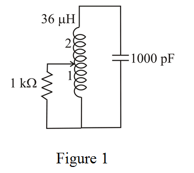

Draw the following resonant tuned circuit.

Determine the value of resonant frequency.
Substitute for L and for C.
Therefore, the resonant frequency of the LC resonator tuned circuit is.
Determine the value of resistance.
Substitute for n and for R.
Determine the value of quality factor of the tuned circuit.
Substitute for L and for.
Therefore, the value of quality factor of the tuned LC circuit is.